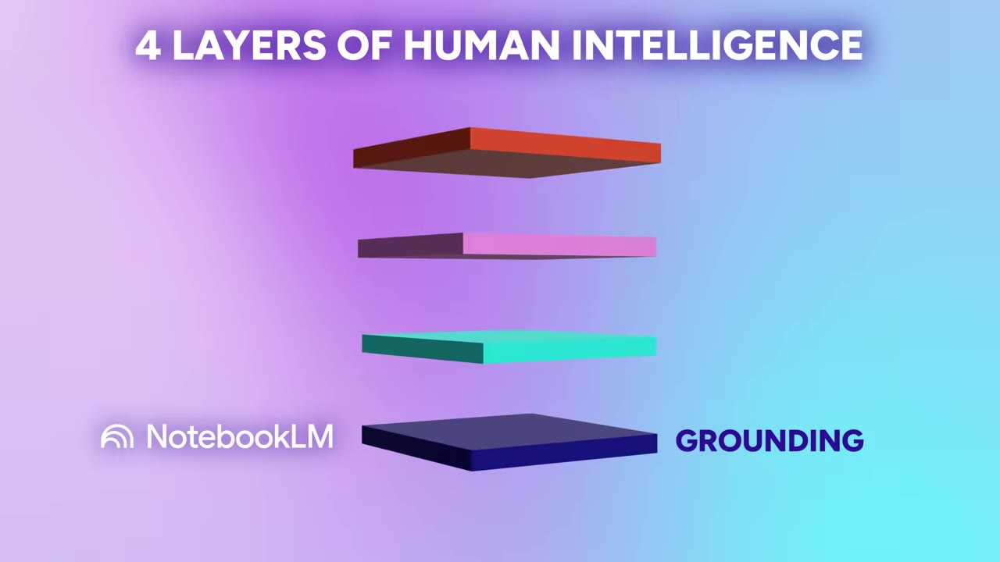
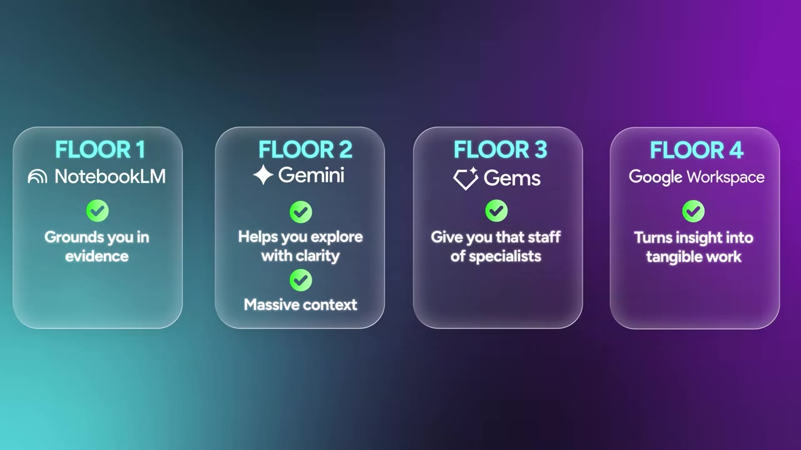

Most people rely on AI for writing—and weaken their own thinking. The real edge isn't the tool; it's the system you build. A four-floor architecture using NotebookLM, Gemini, and Google Workspace turns scattered information into structured expertise.
Watch on YouTubeAn MIT Media Lab study found that people relying on AI for writing showed the weakest brain connectivity and recall. The speaker calls this "machine fog" — most people are building on sand with no blueprint, no foundation, no floors.
The alternative is a four-floor intelligence architecture. The ground floor is grounding: NotebookLM works only from the material you give it — your documents, notes, transcripts, data. It doesn't give you just a response; it gives you the receipt. Upload a 500-page textbook, six months of meeting transcripts, a pile of PDFs — NotebookLM takes it all, then lets you investigate, ask questions, and find patterns. You're anchored in reality, not artificial incompetence.

The second floor is your frontier model — Gemini. It holds an enormous amount of data and context in one session: 2 million tokens of active memory. That's nearly the entire Harry Potter series plus the entire Lord of the Rings trilogy, with room to spare.
Feed it a decade of your company's financial history and thousands of customer call transcripts, and it identifies patterns a human eye would take months to spot. It doesn't just find the needle in the haystack — it understands the entire harvesting season.
Gemini offers three concrete advantages:
Starts to understand your preferences, goals, tone, and how you think.
Docs, audio, charts, images, video, even music — all in one session.
Understands the question, plans research, searches the web, evaluates findings, returns a report with citations.
Raw capacity alone isn't enough — you need to steer it. The speaker shares the AIM framework for prompting Gemini effectively:
But the real power multiplier is Gems — your specialists. Give a Gem a role, a tone, a clear objective, and a knowledge base, and it remembers everything across the entire arc of your work. Not across one chat. Across everything.

Build a writing coach, a coding partner, a research analyst, a brand consultant, a chief of staff — or a devil's advocate. Gems are not folders because folders organize information. Gems organize behavior.
The final problem is fragmentation: too many tools, too many tabs, too many disconnected islands. Research suggests context switching eats up to 40% of productivity time.
Gemini inside Google Workspace solves this. It's no longer a genie trapped in a chat window — it's in Docs, Gmail, Drive, Calendar, Sheets, and Meet. They stop acting like isolated islands and start behaving like one connected environment.
The speaker shares a personal example: joining a Google Meet five minutes late. As soon as he connected, Google Meet AI asked if he wanted to catch up. He clicked yes, and it showed three bullet points of what he'd missed — no need to interrupt the room.
Gemini relieves three big work pressures:
Your story is scattered across resume, job descriptions, interview notes, recruiter emails. Ask Drive AI "What are the biggest gaps in my fit?" and refine your entire narrative.
Missed a meeting? AI catches you up in bullet points. No rewinding, no awkward pauses.
AI learns from the files in your Drive — it sees how you write and think. It's no longer AI writing for you; it's AI writing with you.